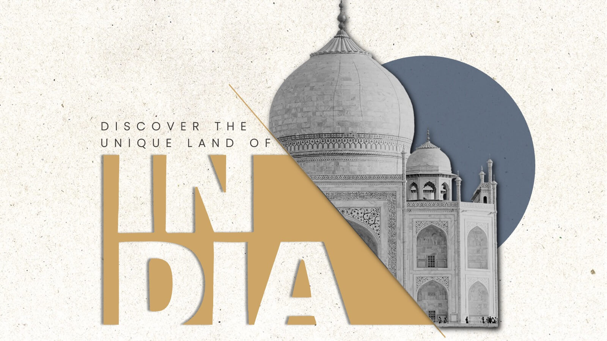

Festivals
India celebrates a variety of festivals that reflect its rich cultural heritage and religious diversity:
- Diwali: Festival of Light, symbolizing the victory of light over darkness.
- Holi: Festival of Colors, celebrating love and the arrival of spring.
- Eid: Festival of Harmony, marked by prayers, feasts, and charity.
- Christmas: Festival of Joy, celebrating the birth of Jesus Christ.

Diwali (English: /dɪˈwɑːliː/), also called Deepavali (IAST: Dīpāvalī) or Deepawali (IAST: Dīpāwalī), is the Hindu festival of lights, with variations celebrated in other Indian religions such as Jainism and Sikhism. It symbolises the spiritual victory of Dharma over Adharma, light over darkness, good over evil, and knowledge over ignorance.
The festivities begin two days before amāvasyā, on Dhanteras, and extend two days after, until the second (or 17th) day of the month of Kartik. (According to Indologist Constance Jones, this night ends the lunar month of Ashwin and starts the month of Kartik but see this note[d] and Amanta and Purnima systems.) The darkest night is the apex of the celebration.
Languages
India is a linguistic treasure trove with 22 officially recognized languages and thousands of regional dialects:
Popular Languages in Indian
| Language | Region |
|---|---|
| Hindi | North India |
| Bengali | West Bengal |
| Tamil | Tamil Nadu |
| Telugu | Andhra Pradesh |
Fun Fact
India is best.😀😀😀Traditional Attire
Indian traditional clothing varies by region, showcasing its cultur diversity:
- Saree: Elegant drape worn by women across India.
- Kurta-Pajama: Comfortable attire for men, popular in the north.
- Lehenga: A festive outfit for women, especially in weddings.
- Dhoti: Traditional men's wear in southern and eastern India.

The Hindi word sāṛī (साड़ी), described in Sanskrit Å›Äá¹Ä« which means 'strip of cloth' and शाडी śāḍī or साडी sāḍī in Pali, ಸೀರೆ or sīre in Kannada and which evolved to sāṛī in modern Indian languages. The word Å›Äá¹ika is mentioned as describing women's dharmic attire in Sanskrit literature and Buddhist literature called Jatakas. This could be equivalent to the modern day sari.
The history of sari-like drapery can be traced back to the Indus Valley Civilisation, which flourished during 2800–1800 BCE around the northwestern part of the Indian subcontinent. Cotton was first cultivated and woven on the Indian subcontinent around the 5th millennium BCE. Dyes used during this period are still in use, particularly indigo, lac, red madder and turmeric.
Contact us at : info@incredibleindia
© 2025 Incredible India Project. All right reserved.
Go to Navigation